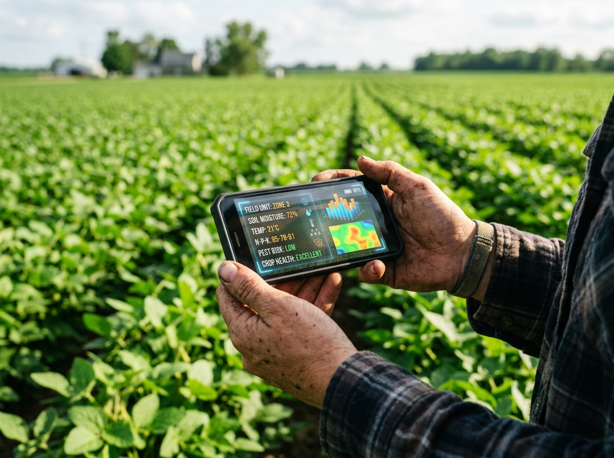
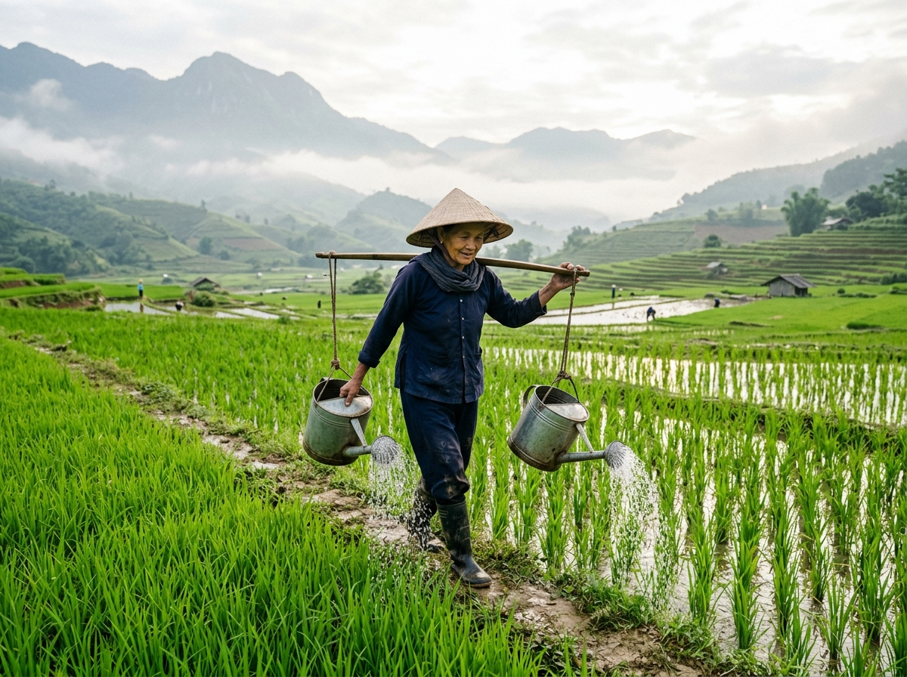
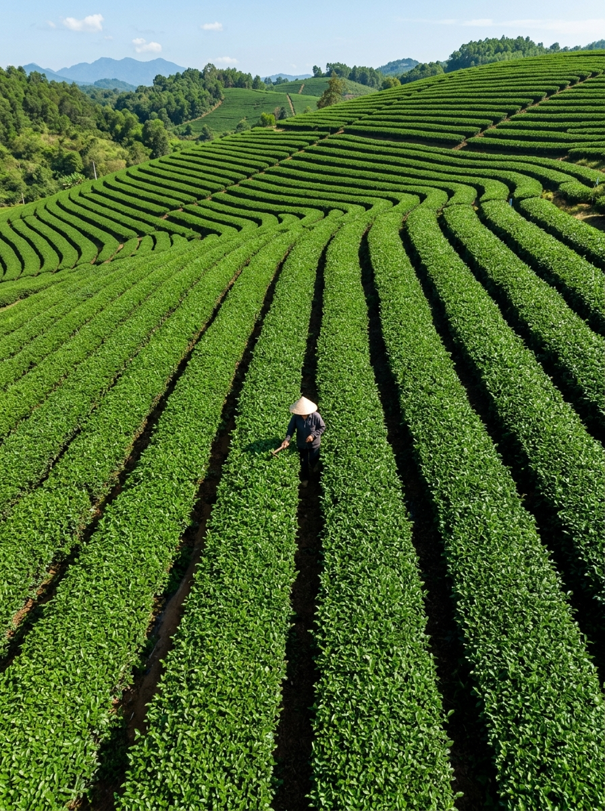
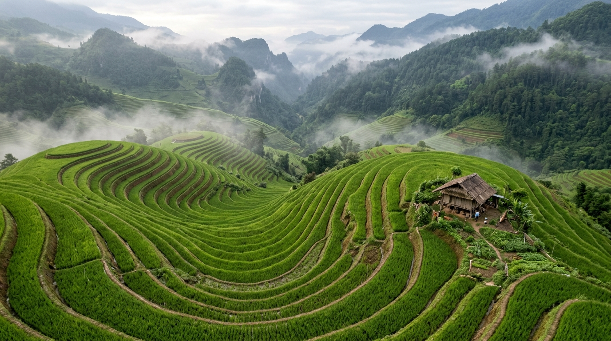
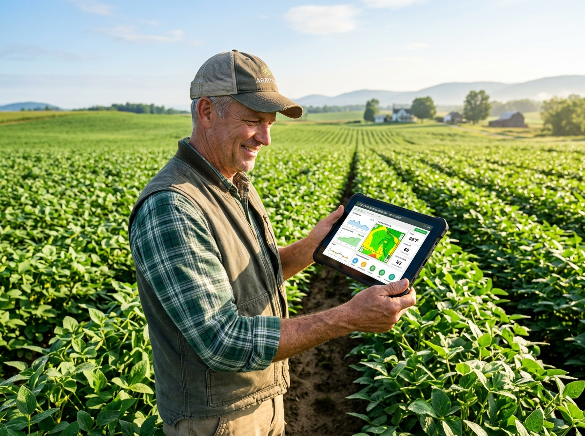
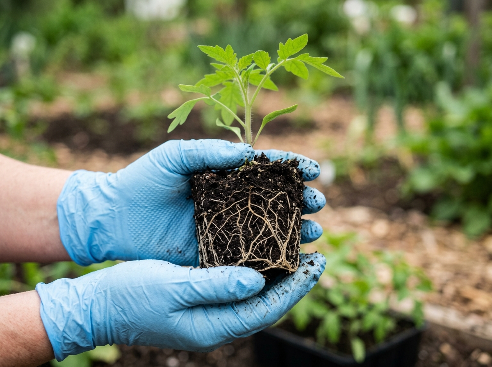
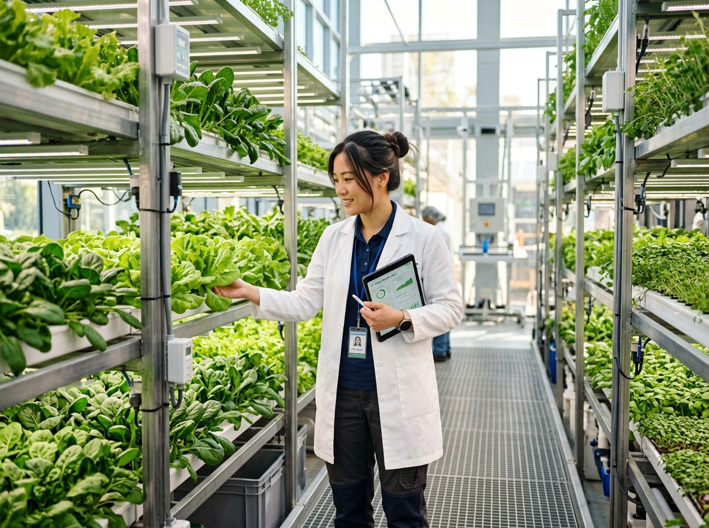

Sustainable Farming in the Age of Climate Change
Explore how farmers worldwide are adapting to rising temperatures and unpredictable weather using eco-friendly and tech-based solutions.

We empower farmers with KISSANVISION AI intelligence, real-time ML crop yield forecasts, ICAR climate risk telemetry, and personalized farm advisory to nourish the planet.
District-level data (50K rows) · 15 crops · 33 states · Historical + Forecast · Farmer overrides
Temperature 26.8°C vs norm 25.7°C (+4%)
| Feature Name | Value | SHAP Value | |SHAP| Impact | Direction |
|---|---|---|---|---|
| crop_APPLE | 1.0 | -4.12 q/ha | 4.12 | Decreases |
| npk_consumption | 120 kg/ha | -1.35 q/ha | 1.35 | Decreases |
| irrigation_pct | 40% | -0.84 q/ha | 0.84 | Decreases |
| total_precipitation | 1172.1 mm | +0.42 q/ha | 0.42 | Increases |
| mean_temperature | 27.1 °C | +0.18 q/ha | 0.18 | Increases |
| season_AUTUMN | 1.0 | +0.02 q/ha | 0.02 | Increases |
| State | Risk | Temp (°C) | Rain (mm) | Alerts |
|---|
Evaluation Metrics (on test.csv, n=47,316)
| Crop | N | RMSE | MAE | R² |
|---|---|---|---|---|
| APPLE | 2 | 20.98 | 20.98 | — |
| ARCANUT (PROCESSED) | 3 | 7.98 | 7.79 | -19.9276 |
| ARECANUT | 293 | 22.86 | 12.94 | 0.1243 |
| ARHAR/TUR | 1407 | 6.19 | 4.94 | -0.8576 |
| ASH GOURD | 9 | 21.04 | 21.04 | — |
| ATCANUT (RAW) | 2 | 47.16 | 47.16 | -72305.2249 |
| BAJRA | 1057 | 5.65 | 4.48 | 0.1840 |
| BANANA | 558 | 77.83 | 53.13 | 0.6683 |
| BARLEY | 835 | 9.48 | 6.93 | -0.0292 |
| RICE | 1167 | 6.12 | 4.25 | 0.5420 |
| WHEAT | 596 | 5.88 | 4.10 | 0.6710 |
| POTATO | 537 | 35.30 | 24.12 | 0.7510 |
| ONION | 546 | 32.50 | 21.80 | 0.7820 |
KISSANVISION combines modern machine learning technology and sustainable methods to help farmers grow smarter, faster, and greener.

We create solutions that farmers trust and rely on across 33 states.
Decades of innovation driving progress in global agriculture & agro-analytics.
XGBoost regression on 50,000 verified district-level agricultural records.
Harnessing the power of modern tools to nurture crops, support farmers, and protect the earth we all depend on.


Explore how farmers worldwide are adapting to rising temperatures and unpredictable weather using eco-friendly and tech-based solutions.

Discover how AI, IoT, and automation are helping farmers monitor crops, boost yields, and reduce waste — shaping the future of agriculture.

Restoring soil health, preserving natural microbiomes, and optimizing organic compost cycling to achieve resilient year-round yields.

Embracing controlled environment vertical agriculture, solar-powered drip misting, and zero-runoff closed loop farming technologies.
Find quick answers to some of the most common questions about KISSANVISION solutions, farming technology, and how we help farmers grow smarter and sustainably.
We provide tools and technology for precision farming, crop monitoring, ML yield simulation with ICAR risk alerts, and smart irrigation to help farmers optimize yield and resource efficiency.
Simply navigate to our AI Predictor simulator above or connect directly to our 15 REST API endpoints. You can select your state, crop, and farm area to get instant localized agronomic forecasts.
Yes, 100%. Our intelligence models are designed around regenerative agriculture, helping minimize synthetic chemical runoff, preventing over-irrigation, and protecting groundwater aquifers.
We offer extensive documentation, API guides, interactive SHAP explainability breakdowns, and dedicated agronomy advisory to guide farmers and agricultural researchers through every season.